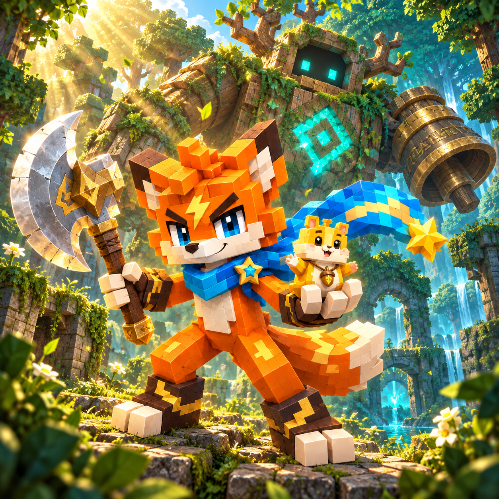

斧刃夥伴

點擊揮斧闖過 30 條森林路線，收集 4 位夥伴與 15 件裝備，將重複掉落化為升階碎片。

點擊揮斧闖過 30 條森林路線，收集 4 位夥伴與 15 件裝備，將重複掉落化為升階碎片。
點擊揮斧闖過 30 條森林路線，收集 4 位夥伴與 15 件裝備，將重複掉落化為升階碎片。
點擊戰場或「揮斧」即可攻擊。鍵盤空白鍵攻擊，F 切換自動戰鬥，J 發動夥伴技能，A／D 或左右方向鍵選擇目標，Esc 暫停。每第八次揮斧會掃擊敵人。
進入路線前，從已收集的夥伴中選擇一位出戰；能量全滿時可發動其技能。收齊四位夥伴並不代表四位能同時上場。
共有 30 條路線：第 1–10 條各有 24 波，第 11–20 條各有 32 波，第 21–30 條各有 40 波；每五條有一個首領關卡。後段路線戰鬥更長，敵人組合也更密集。
進度達到 100% 時，該路線即記錄為通關並解鎖下一條；第 30 條之後沒有下一關。點完成按鈕可開啟結算，也可繼續戰鬥刷掉落。之後落敗或離開，不會抹除已通關的路線。
共有 15 件裝備，依目前路線與機率掉落；達到解鎖路線不代表必定取得。重複裝備會轉為碎片，第一次升階需要 10 片，後續需求會增加。請在關卡畫面更換或升階，再開始下一次探險。
瀏覽器允許儲存時，已通關路線、收集的裝備與夥伴、升階和偏好會保存在目前瀏覽器。重新整理不會接續未完成的戰鬥。清除網站資料、換瀏覽器，或使用封鎖／暫時性儲存，都可能使進度遺失；沒有雲端存檔轉移。